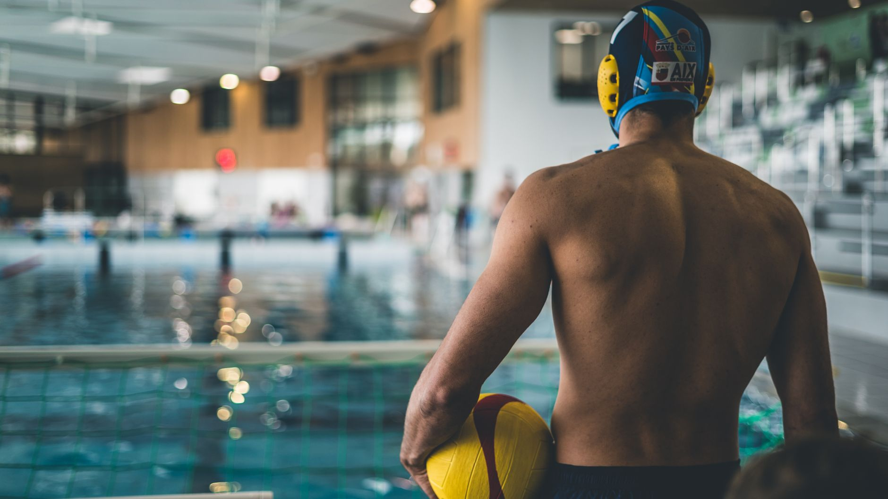

A Big Moment for Youth Water Polo
USA Water Polo recently unveiled the official design for the 2026 Junior Olympics, and the announcement has sent a wave of excitement through the youth aquatic sports community across the country. For families and young athletes in Wesley Chapel, Land O' Lakes, and the greater Tampa Bay area, this news is more than just a design reveal — it is a glimpse into the future of competitive water polo and a reminder of what is possible for dedicated players at every level.
The Junior Olympics is one of the most prestigious competitions on the USA Water Polo calendar. It brings together some of the most talented young players from across the nation, giving them the opportunity to compete at a high level, represent their regions, and showcase years of hard work in the pool. The unveiling of the 2026 design signals that planning is well underway, and the countdown has officially begun.
Why Junior Olympics Matters for Young Water Polo Players
For young athletes who are serious about water polo, the Junior Olympics represents a defining milestone. It is not simply about winning — it is about the journey of preparation, team building, and personal growth that comes with training toward a goal of that magnitude. Competing at a national event teaches players lessons that reach far beyond the water.
Here are a few reasons why aspiring players and their families should pay close attention to events like the Junior Olympics:
- National exposure: College coaches and club scouts actively follow Junior Olympics rosters and performances, making it a critical stage for young athletes with recruiting ambitions.
- Elite competition: Going up against the best players in the country accelerates development in ways that local or regional play alone cannot replicate.
- Team culture: Representing a club or region at a national event builds a sense of identity and shared purpose that strengthens team bonds for years to come.
- Personal motivation: Having a major competition on the horizon gives players a concrete, meaningful goal to train toward throughout the season.
What This Means for Players in the Tampa Bay Area
The Tampa Bay area has a growing and passionate water polo community, and young athletes in Wesley Chapel and Land O' Lakes are part of that rising tide. With access to quality coaching, strong club programs, and a year-round aquatic sports culture, local players are well-positioned to compete at the regional and national levels given the right development path.
At Nexar Aquatic Academy, we believe that every young athlete deserves the opportunity to dream big and train with purpose. Whether a player is just beginning their water polo journey or is already setting sights on national competition, building a strong foundation in skills, fitness, and game IQ is what creates long-term success.
How to Start Preparing Now
If your young athlete has aspirations of competing at an event like the 2026 Junior Olympics, the time to build toward that goal is right now. The players who arrive at national competitions ready to perform are almost always the ones who committed to their development years in advance.
- Focus on the fundamentals: Eggbeater kick, ball handling, and positioning are skills that must be deeply ingrained before advanced tactics make sense.
- Build water endurance: Water polo demands both aerobic and anaerobic fitness. Consistent swim training is non-negotiable for serious players.
- Compete regularly: Seek out tournaments and league play throughout the year to build competitive experience and mental toughness.
- Work with experienced coaches: Quality instruction at the right developmental stages makes a measurable difference in a player's trajectory.
The Journey Starts Here
The 2026 Junior Olympics is still ahead, and for young water polo players across the country, that means there is time to prepare, improve, and rise to the occasion. At Nexar Aquatic Academy, we are proud to support the next generation of aquatic athletes right here in the Tampa Bay area. The path to national competition begins with a single practice, a single goal, and a commitment to show up every day ready to grow.
Stay inspired, stay consistent, and keep your eyes on the pool — because great things are ahead for youth water polo.
Ready to get in the water?
First practice is completely FREE — no commitment needed.